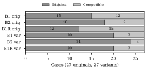

Repository instruction files such as AGENTS.md guide AI coding agents, and a nested file may legitimately refine or replace guidance from its ancestors, so an apparent disagreement is not necessarily a defect. CIPHER defines a task-conditioned classification of instruction pairs under a declared directory-precedence profile into five labels: unresolved conflict, valid override, disjoint applicability, compatible, and insufficient evidence. From a public configuration dataset we built a traceable pilot set of 27 real instruction pairs from eight repositories at pinned commits, each with a context-changing variant and an order control, and an annotation protocol for blinded labeling. Human reference labels have not yet been collected, so this short paper reports a preliminary analysis, frozen by hash before predictions were opened, that needs none: accuracy on the 26 cases whose label the profile fixes from file paths (5 mined originals, 16 constructed variants, 5 controls), and label-free measures elsewhere. With one local open-weight model, a direct prompt and a structured pipeline that computes applicability and precedence explicitly, both given the same evidence packet, were correct on all 26 profile-determined cases, whereas a keyword heuristic flagged 2 of them as conflicts. No model arm judged any original or variant to be an unresolved conflict. The arms disagreed mainly on condition-based applicability, but an exact repeat of the direct prompt changed of 81 labels, so such small differences are within run-to-run variation. The structured pipeline used more output tokens than the direct prompt (3589 versus 2177 per case) without a measurable gain.
Keywords: AI coding agents, AGENTS.md, instruction conflicts, repository mining, scope and precedence
AI coding agents read project guidance from natural-language files in
the repository. The AGENTS.md convention allows one file per package and
states that “the closest AGENTS.md to the edited file wins” [1]. Apparent disagreement between such
instructions is therefore not always a defect. Take two rules, “use
exactly four spaces per indentation level” and “use exactly two”. If
both sit in the root file, they genuinely conflict for any new line; if
the second sits in web/AGENTS.md, it is a documented local
override for web/src/button.ts; and if it sits in
api/AGENTS.md, it does not apply to that target at all. The
wording is identical in all three situations; only the files’ placement
relative to the task’s target differs.
A conflict detector can fail in both directions: it can miss incompatible obligations, or it can report a legitimate local exception as a defect and suggest deleting useful guidance. The two AGENTS.md detectors we examined flag contradictions from text alone. In a study of 100 repositories, a model-based smell detector, which reads one file at a time, reported 28 conflicting-instruction cases, of which manual analysis by that study’s first author confirmed 16 [2]; the keyword heuristics of Ruleherd [3] compare files without regard to scope. We found no study that tests whether explicit scope and precedence reduce such false alarms.
CIPHER asks whether making applicability and precedence explicit improves the classification of apparent conflicts: how reliably humans separate the labels (RQ1), whether a structured pipeline beats a direct model given the same evidence (RQ2), and whether predictions respond correctly to relevant context changes and stay stable under irrelevant ones (RQ3). We contribute (1) a task-conditioned, five-label definition of the problem under a declared AGENTS.md loading profile; (2) a traceable pilot set of 27 real instruction pairs from eight repositories at pinned commits, each with one context-changing variant and one order control, and an annotation protocol and tool designed for blinded labeling (not yet used) for RQ1; and (3) a comparison of a keyword heuristic, a direct model given an evidence packet, and a structured pipeline given the same packet and model. Human labels have not yet been collected, so Section 6 reports a preliminary analysis without human labels: on cases whose label the profile fixes from directory structure, the direct model was already correct, so the structured pipeline added cost without measurable benefit there, while the arms differed on condition-based applicability by margins comparable to run-to-run variation. The protocol, data, prompts, raw outputs, and analysis code are released at https://github.com/4waiz/cipher.
A case is one pair of verbatim instruction spans (with file path, line numbers, heading, and enclosing section), one concrete task that edits one target file, one pinned commit, and one loading profile. The label concerns this pair and task, not the overall quality of a repository.
Profile P1 (frozen; an experimental interpretation of [1], not a claim about every tool). Only AGENTS.md files participate. The binding loaded set is every AGENTS.md on the target’s ancestor directory chain; files in unrelated branches are not loaded. A loaded instruction is in force unless its own wording limits it. When two loaded instructions are incompatible on the same decision, the more deeply nested file wins, and ancestor instructions about other decisions stay in force. Equal authority (same file or same depth) is not ranked by order of appearance; only an explicit statement can create priority. User prompts, other file formats, imports, symbolic links, multiple working roots, and multi-target tasks are excluded.
Labels and decision sequence. The handbook orders the judgment as follows: (1) if meaning or applicability cannot be established, Insufficient evidence; (2) if, before priority, either instruction is inactive (not loaded, or excluded by its own condition), Disjoint applicability; (3) if the active instructions can be satisfied together, Compatible (different decisions, refinements, duplicates, or a preference beside a requirement); (4) otherwise Valid override if P1 or an explicit statement picks a winner, else Unresolved conflict. Modality is preserved: “prefer X” does not forbid Y, and descriptions or examples are not rules unless worded as requirements.
Sampling. The frame was the
context_files.csv table of a public configuration
dataset [5]
(Zenodo 20090356): 237 repositories with a root and a nested AGENTS.md.
In a seeded random order we retrieved the first 30 through the GitHub
API at their default-branch commit on 21 October 2026, storing every
AGENTS.md as inert JSON with its SHA-256. Repositories needed an
open-source license, no fork or archive status, an untruncated Git tree,
no symlinked AGENTS.md, and a root and a nested file with five or more
non-empty lines (24 of 30). Files under template, example, vendored, or
hidden directories were excluded as separate project roots.
Candidate pairs. Retrieval is separate from
classification and challenge-oriented: directive units (list items and
paragraphs outside code fences) are paired when they share a specific
tool, command, or convention term or name different values from one
family (e.g., npm and pnpm); the score favors
different values, opposite polarity, conditions, and precedence words,
and verbatim duplicates are excluded. Of the repositories with at least
four pairs, two across files (12), the first two in frame order formed
the calibration split and the next eight the evaluation split. Up to
four pairs per repository were selected by score with relation quotas,
yielding 27 evaluation originals (16 ancestor–descendant, 5
unrelated-branch, 6 same-file) and 7 calibration originals. Tasks come
from fixed templates written with AI assistance (e.g., “make a small fix
in <target> and complete the checks this change
requires before committing”); targets are real files. The sample cannot
estimate how often conflicts occur.
Strata. Each original has a context-changing variant that keeps both instructions’ wording and changes one documented property: the target path (16 cases, moving the target outside the nested file’s directory) or the placement of one instruction (11 cases, relocating it to the root or to a nested file on the target’s chain). A relocated instruction is appended under a copy of its nearest heading, so outer headings of its original file are lost; no human has yet checked whether this changes meaning. Each original also has an order control that only swaps the presentation order of the two instructions. Variants and controls are constructed material; every result states how many cases come from each stratum.
Annotation protocol (prepared, not yet used). A frozen handbook and an offline tool support two independent annotators and an adjudicator, with separately randomized packets, opaque item IDs, no predictions or strata, the target’s directory chain marked, full files, and a 20-item calibration packet (six invented practice items). No human labels were collected for this submission, so RQ1 is not answered here.
B0 applies Ruleherd’s contradiction rules (v0.1.3, commit 94559fc6: keyword pairs such as npm/pnpm and never/always polarity across different files) to the two spans and yields a binary flag. B1 is one call that receives the evidence packet (task, target, commit, all AGENTS.md paths, both spans with line-numbered sections, scope statements), the profile, the label definitions, and the decision sequence, but not the full files or the chain marking. B2, the CIPHER pipeline, uses the same model and packet: one call extracts each instruction’s requirement, decision, modality, explicit condition, and whether that condition covers the task, plus any explicit priority statement; code computes the loaded set and depth precedence (an unclear condition counts as covering the task; B2 cannot abstain); a second call, made only when both instructions stay active and neither is merely descriptive, judges incompatibility; fixed rules map the results to a label. B1R, an equal-call control, is B1 followed by one self-review call.
All arms used the open-weight Qwen3.6-35B-A3B [14] (3B active parameters; Q4_K_M; Ollama digest a7eb95c5, served by Ollama 0.40.6, auto-updated to 0.40.7 before the last four B2 cases and B1R) on one laptop GPU with thinking enabled, the model card’s settings for precise coding (temperature 0.6, top- 0.95, top- 20), a fixed seed, JSON-schema output, and up to two retries. Requests contained only the method prompt and the evidence. Before any held-out run, calibration led to one change (B2’s sufficiency field became a two-value enum); before any held-out output was opened, an independent AI code review found that the scope-statement header implied all listed files were loaded, so it was corrected and all runs repeated. Inputs, prompts, and schemas were frozen by hash before the reported runs, which stayed sealed until the analysis was frozen. The planned primary outcome, macro-F1 against human labels, could not be computed; a plan addendum written before the predictions were opened defines the reported analysis.
Reference without human labels. Human labeling was not carried out for this submission, and no model output substitutes for it. Accuracy is therefore reported only where P1 alone fixes the label: 26 cases in which one instruction’s file is not on the target’s directory chain, so that instruction is not loaded and the label is Disjoint applicability. They are 5 mined originals (all unrelated-branch pairs), 16 constructed target-path variants, and 5 order controls. B2 computes the loaded set in code, so on these cases it is correct by construction unless its extraction reports insufficient evidence or fails; the open question is whether B1 and B0 also get them right. All other measures in Table [tab:results] need no reference. This analysis was defined and frozen by hash before the sealed predictions were opened; the repeat comparison below was added afterwards and is exploratory.
Directory scope (RQ2, determined subset). B1, B2, and B1R labeled all 26 profile-determined cases correctly, the 21 originals and variants as well as the 5 controls (0 cases favored B2 and 0 favored B1). B1’s explanation or cited evidence named the off-chain file in of the 21 cases, so the direct model handled directory applicability from the paths and the profile text without a deterministic step. B0, which ignores scope, flagged 2 of the 26 cases as conflicts: one ESM/CommonJS keyword match between two unrelated packages, in the original and in its order control. For this model, the determined subset does not support the hypothesis that explicit structure is needed to handle directory scope.

Label-free comparison. No model arm labeled any
original or variant an unresolved conflict or a valid override; every
such prediction was Compatible or Disjoint (Fig. 1), while B0 flagged 2 of the 54. (The
only Valid override in the study is B1R’s single self-review
change, on an order control.) The challenge-oriented retrieval thus
surfaced lexically similar pairs that the models judged non-conflicting.
The arms differ on the boundary between compatibility and
condition-limited applicability: on originals B2 chose Disjoint
18 times and B1 15 times, and B1 and B2 agreed on 22 of 27 originals
(Cohen’s
)
and 23 of 27 variants
().
The first non-determined original on which they disagree (by the
declared selection rule) pairs a root rule “use Protocol
for decoupling” with a nested rule “avoid TYPE_CHECKING”,
both naming Python constructs, for a TypeScript target. B1 treated both
rules as inactive, whereas B2’s extraction found no explicit condition
and returned Compatible; on the order control of the same case
the two arms swapped answers. Whether the rules apply is a judgment
about implicit applicability that P1 does not settle and that human
labels must resolve.
Stability and sensitivity (RQ3). Swapping the order of the two instructions changed the label in four of 27 controls for each model arm (23, 23, and 23 unchanged for B1, B2, and B1R), although all 5 determined controls stayed correct. These changes must be read against run-to-run variation: B1R’s first call repeats B1’s request exactly (same prompt, evidence, and seed, but on the updated runtime), yet its label differed from B1’s in of 81 cases ( originals, variants, controls), a margin as large as the order effects and the B1–B2 disagreements. All 16 target-path variants, which move the target out of the nested file’s directory, were labeled Disjoint by every arm; the label differed from the original’s in 8 (B1), 7 (B2), and 11 (B1R) cases, because many originals were already judged inactive by condition. Placement variants changed B2’s label once and B1’s 5 times out of 11; without reference labels, and given the run-to-run variation, we cannot say which changes are correct.
Cost. No arm had a failure, retry, or malformed output. B2 averaged 1.26 calls and 3589 output tokens per case, against 1.00 and 2177 for B1; the equal-call control B1R (3960 tokens) changed its first answer in 1 of 81 cases, so its differences from B1 come mainly from resampling rather than review. Latency is not compared because the GPU was shared with another process for part of the runs.
Without human labels, accuracy is measured only on the profile-determined subset, which B2 solves by construction and which proved easy for the direct model; the semantic question of condition-based and implicit applicability remains unmeasured, and agreement between methods is not accuracy. The sample is small (27 originals from eight repositories) and challenge-oriented, so it cannot estimate how often conflicts occur; the absence of predicted conflicts may reflect the retrieval as much as the repositories. Tasks come from templates, and variants and controls are constructed. Each arm ran once; despite a fixed seed, an exact repeat of B1’s requests (B1R’s first calls, on the updated runtime) changed of 81 labels, so differences of a few cases between arms or between an original and its control are within run-to-run variation. One profile and one quantized open-weight model limit generalization, and public repositories may appear in the model’s training data. Results concern classification under P1, not whether agents follow instructions or produce better code.
CIPHER contributes a task definition, a traceable set of real AGENTS.md instruction pairs with controlled variants, and an annotation protocol for blinded labeling. In this preliminary evaluation without human labels, a local open-weight model given the evidence packet resolved directory scope as reliably as a pipeline that computes it explicitly, and at lower cost, whereas a scope-blind keyword heuristic flagged one out-of-scope pair (and its order control) as a conflict; no model arm judged any mined pair a genuine conflict. The open problem is condition-based and implicit applicability, where the arms disagree, and repeated runs show that single-run differences of a few cases are not reliable evidence. Collecting independent human labels for those cases, repeating runs, and testing other models and loading profiles are the next steps.
Following IEEE policy [15], we disclose AI assistance. OpenAI ChatGPT assisted with concept exploration, literature synthesis, and drafting of the earlier proposal on which Sections I–III build. Anthropic Claude (Opus 5.5, via Claude Code) audited the related work against primary sources; wrote the software for sampling, case construction, the annotation tool, the model arms, and the analysis; wrote the task templates, the annotation handbook, and the practice items with their answers; performed the code and manuscript reviews; ran all experiments; and drafted the text of every section, the tables, and the figure of this version under the authors’ direction. No human annotation was performed for this version, and no AI output was used as a reference label; the only reference is computed from file paths under P1. Qwen3.6-35B-A3B is the system under evaluation. The authors reviewed the manuscript and are responsible for its content.